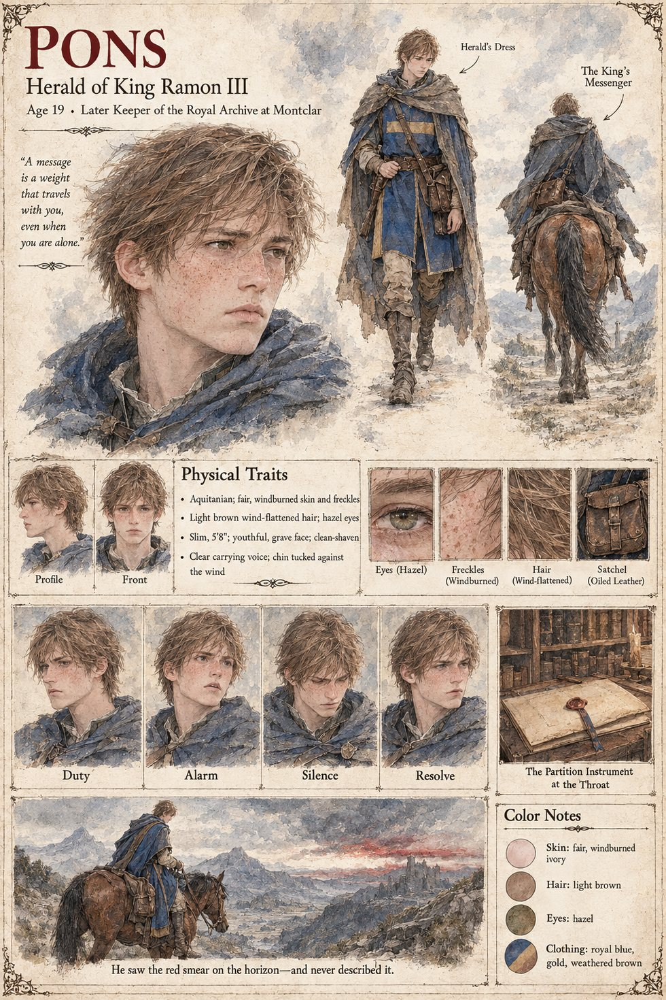

Pons
Herald of King Ramon III · 19 at the opening, 22 at the Throat · later keeper of the royal archive at Montclar
A herald of nineteen who rides four days from Montclar to arrive on the twenty-fourth of Garren, with the king's letter in an oiled satchel strapped against his chest and his chin tucked down against a wind that has turned, unseasonably, warm. On the morning of the fourth day, from the crest of the last ridge before the Lauze, he sees on the southern horizon a smear the color of dried blood, no larger than a thumbprint, that neither moves nor fades, and looks at it for a long time with the clear feeling of a boy who has been given a message and has just found out what it weighs. He delivers the letter to the bailiff in the correct form, and then, when the formalities are over, asks in a small voice whether he might sit down.
Three years later, at twenty-two, he is sent down the south road in sleet on the thirteenth of Lorren with the sealed duplicate of the partition strapped where the king's letter once was, to read it at the Throat to a hundred of the Baronies' levy in the red of the Son and a hundred and twenty lay-brothers of the Last Order in grey, with Gaucelm vending roasted nago between them at the same price to both. He reads it in the clear carrying voice the College of Heralds taught him, watches the masons set an unlettered stone, and looks up, because it is the only direction nobody else is looking, at what is left of the Dawn Wall: a fringe of the dead along the brow, so exactly the color of the smear that his horse lays its ears back. He has no wish to describe it, and does not. He becomes, forty years on, a very old man and the keeper of the royal archive at Montclar, and among the thousand times he is asked about the partition of Auvarre he is never once asked about the wall. The manuscript gives him no face; the sheet's freckles, hazel eyes and royal-blue herald's tabard are its own.